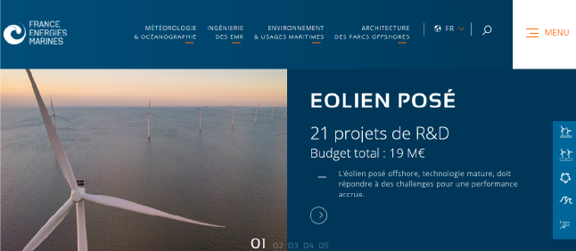

France Énergies Marines
2020

France énergies marines est l’Institut pour la Transition Énergétique dédié aux énergies marines renouvelables. L’institut a confié à l’agence Appaloosa la refonte totale de son site. L’arborescence du site était profonde et les fonctionnalités à développer sur celui-ci étaient nombreuses. À partir d’un thème vide, j’ai développé une grande partie des pages, des nouveaux types de contenus, le carousel de la page d’accueil... Ce fut un projet très enrichissant, car il nécessitait d’utiliser plusieurs facettes de Wordpress.